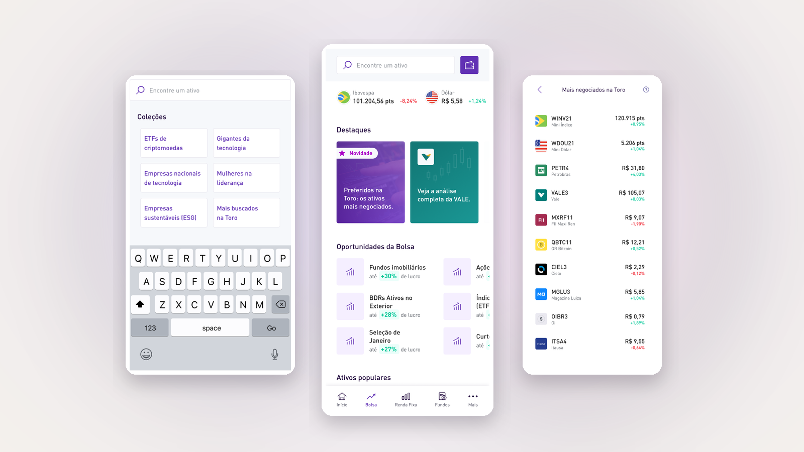
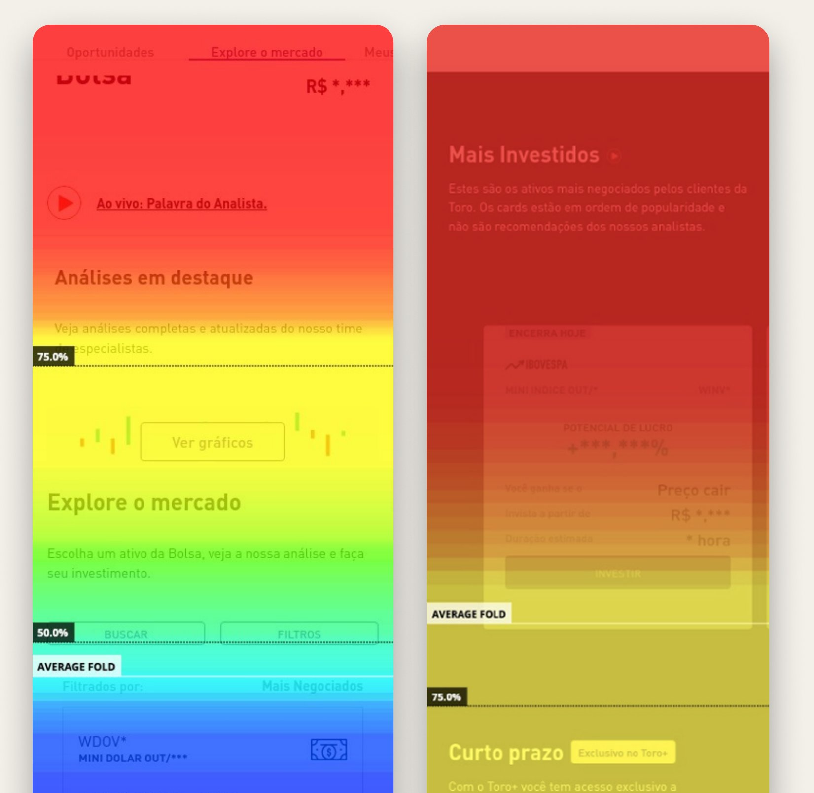
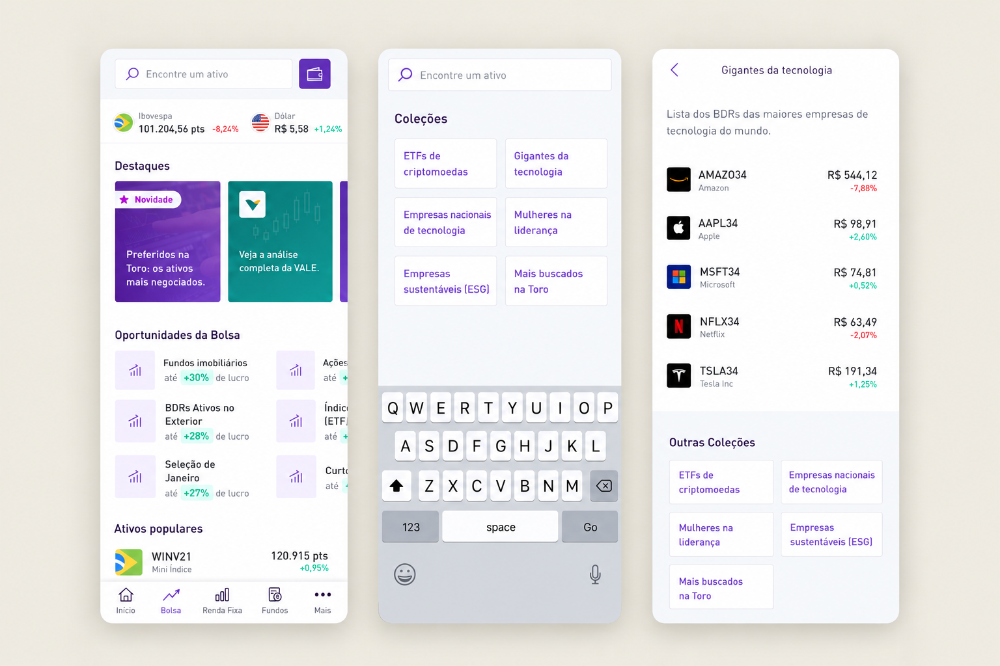
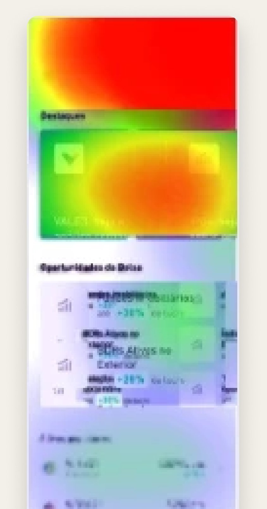

Case 02Toro Investimentos / Santander CorretoraExperiência de investimento
Evolução da experiência de Bolsa
Da descoberta de ativos ao envio de ordens.

01Contexto
Problema a ser resolvido
A área de Bolsa de Valores do aplicativo da corretora, Toro Investimentos, precisava conduzir melhor o investidor da descoberta de ativos até o envio de ordens.
A página recebia usuários, mas os conteúdos e caminhos importantes não estavam suficientemente visíveis.
- 01Os usuários chegavam à página, mas não avançavam para o envio de ordens.
- 02Conteúdos competiam por atenção sem estrutura visual clara que conduzisse o usuário.
- 03O conteúdo estratégico estava abaixo da dobra inicial, ficando “invisível” para a maioria.
O KPI de envio de ordens estava abaixo do esperado, o que motivou o discovery da experiência e da descoberta de ativos.
02Atuação
Meu papel no projeto
Atuei como designer responsável pelo projeto, conectando investigação, decisões de experiência, validação e acompanhamento de resultados.
Entrevistas com stakeholders, usuários, análise de dados no mixpanel e heatmaps, investigação dos pontos de abandono, redesign da interface e hierarquia de informações, testes de usabilidade e acompanhamento das métricas após o lançamento.
Produto trazendo a visão de negócio, design identificando as necessidades dos usuários e estruturando soluções para melhorar a experiência e a usabilidade e engenharia avaliando a viabilidade técnica das propostas.
O trabalho conectou evidências de comportamento dos usuários, objetivos de negócio e viabilidade de técnica.
03Aprofundando no problema
Entendimento e investigação
- 01
Perguntas iniciais
Onde os usuários abandonavam a jornada?
O problema era navegação ou descoberta?
- 02
Como investigamos
Dados do Mixpanel e heatmaps para entender o comportamento na página e identificar por que os usuários não avançavam na descoberta de ativos.
- 03
Como validamos
Testes de usabilidade com usuários.
04Análise
Heatmap de scroll
Os heatmaps mostraram padrões críticos de comportamento e indicaram o que precisava ser reorganizado na arquitetura da interface.
dos usuários não chegavam ao conteúdo essencial da página.O scroll era interrompido antes que essas informações fossem visualizadas.
dos usuários chegavam à lista de ativos.Apenas uma parcela dos usuários avançava até a área de descoberta de ativos.
O componente de busca por ativos ficava fora da área inicial de visualização, reduzindo sua taxa de uso.
As informações existiam, mas a hierarquia da página não ajudava os usuários a encontrá-las.

05Insights e decisões
O problema estava na descoberta dos ativos
- Embora as informações existissem, elas estavam em áreas pouco acessadas pelos usuários.
- Usuários precisavam digitar o nome exato do ativo na busca, e pequenos erros impediam a descoberta.
- 01Reorganização da hierarquia.
- 02Conteúdo estratégico na parte superior da interface.
- 03Melhor posicionamento da busca.
- 04Destaques com fácil acesso.
A busca fonética foi considerada, mas diante das limitações técnicas, priorizamos melhorias na hierarquia da informação e no acesso ao campo de busca e aos destaques.
06Solução
O que mudou
A nova hierarquia priorizou busca, destaques, oportunidades e ativos populares.
- 01Reorganização da hierarquia.
- 02Melhor posicionamento da busca.
- 03Conteúdo estratégico acima da dobra.
- 04Destaques com acesso rápido e facilitado.

07Validação
Teste de usabilidade
Após desenhar a nova versão, realizei testes de usabilidade para validar se a nova estrutura facilitava a navegação e a descoberta de ativos.
Resultados percebidos- 01Os usuários perceberam a nova estrutura como mais fácil de navegar.
- 02A nova posição do campo de busca facilitou a pesquisa por ativos.
- 03Os ativos mais investidos ficaram mais fáceis de identificar.
Os testes trouxeram evidências qualitativas de que a nova organização respondia aos problemas observados na investigação.

08Impacto no negócio
Resultado no envio de ordens
+864%
De crescimento no volume de ordens enviadas.
Após o lançamento da versão nativa, o volume de ordens enviadas cresceu 864% em relação ao mês anterior, segundo dados do mixpanel.
Dados absolutos foram omitidos para preservar informações internas da empresa.
09Impacto para o usuário
Como decisões de design impactaram a experiência
- 01
Redução de fricção
Conteúdo e funcionalidades relevantes ficaram mais acessíveis.
- 02
Melhor descoberta
Usuários passaram a encontrar ativos e oportunidades com menos esforço.
- 03
Navegação mais eficiente
A reorganização da hierarquia tornou a jornada mais intuitiva.
- 04
Maior clareza
Informações importantes passaram a aparecer nos pontos de maior atenção.